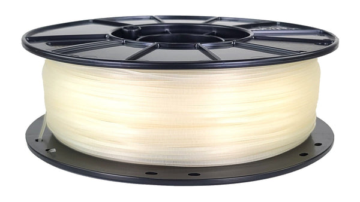

Materiales
Biblioteca por material
PLA, PETG, ABS, ASA, TPU, nylon, PC, PP, PPS y compuestos con fibra de carbono.
Abrir biblioteca →Wiki técnica de impresión 3D
Una base de conocimiento clara para aprender, elegir materiales, entender tu impresora y resolver problemas reales sin perderte entre consejos sueltos.
Rutas rápidas
La portada está organizada como un panel de acceso: fundamentos, materiales, mantenimiento y acabado final quedan separados para consultar sin fricción.
Flujo de trabajo
La impresión 3D funciona mejor cuando entiendes todo el recorrido: diseño, laminado, material, calibración, impresión, postprocesado y mantenimiento.
Ver el proceso completo →Contenido destacado

PLA, PETG, ABS, ASA, TPU, nylon, PC, PP, PPS y compuestos con fibra de carbono.
Abrir biblioteca →
Limpieza, primera capa, boquillas, correas, lubricación, seguridad y revisión eléctrica.
Abrir mantenimiento →
Lijado, masilla, imprimación, pintura, barnices y acabado funcional de piezas impresas.
Abrir postprocesado →Materiales
Una selección rápida para saltar a la ficha adecuada según resistencia, facilidad y entorno de trabajo.
Seguridad
La wiki trata la impresión 3D como una práctica técnica real: ventilación, supervisión, estado del cableado, resinas, boquillas calientes y materiales exigentes forman parte del aprendizaje.